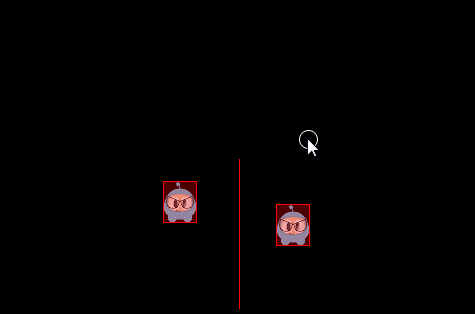
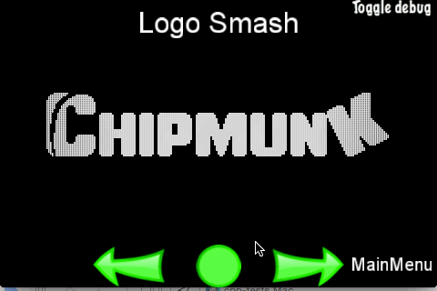

Physics
Your game is coming along nicely. You have Sprite objects, gameplay mechanics
and your coding efforts are paying off. You are starting to feel like your game
is playable. What do you do when you realize your game needs to simulate real
world situations? You know, collision detection, gravity, elasticity and
friction. Yes, you guessed it! This chapter is on physics and the use of a
physics engine. Let's explore the when, wheres and whys of using a
physics engine.
Physics is scary, do I really need it? Please tell me no!
Please don't run away there are no physics monsters under your bed! Your needs
might be simple enough to not need to use a physics engine. Perhaps a combination
of using a Node objects update() function, Rect objects and a combination
of the containsPoint() or intersectsRect() functions might be enough for
you? Example:
void update(float dt)
{
auto p = touch->getLocation();
auto rect = this->getBoundingBox();
if(rect.containsPoint(p))
{
// do something, intersection
}
}
This mechanism works for very simple needs, but doesn't scale. What if you had
100 Sprite objects all continuously updating to check for intersections with
other objects? It could be done but the the CPU usage and framerate would suffer
severely. Your game would be unplayable. A physics engine solves these concerns
for us in a scalable and CPU friendly way. Even though this might look foreign,
let's take a look at a simple example and then nut and bolt the example,
terminology and best practice together.
// create a static PhysicsBody
auto physicsBody = PhysicsBody::createBox(Size(65.0f , 81.0f ), PhysicsMaterial(0.1f, 1.0f, 0.0f));
physicsBody->setDynamic(false);
// create a sprite
auto sprite = Sprite::create("whiteSprite.png");
sprite->setPosition(Vec2(400, 400));
// sprite will use physicsBody
sprite->addComponent(physicsBody);
//add contact event listener
auto contactListener = EventListenerPhysicsContact::create();
contactListener->onContactBegin = CC_CALLBACK_1(onContactBegin, this);
_eventDispatcher->addEventListenerWithSceneGraphPriority(contactListener, this);
Even though this example is simple, it looks complicated and scary. It really
isn't if we look closely. Here are the steps that are happening:
A PhysicsBody object is created.
A Sprite object is created.
The Sprite object applies the properties of the PhysicsBody object.
A listener is created to respond to an onContactBegin() event.
Once we look step by step the concept starts to make sense. To better understand all the details of a physics engine you should understand the following terms and concepts:
Physics terminology and concepts
Bodies
A PhysicsBody holds the physical properties of an object. These include mass,
position, rotation, velocity and damping. PhysicsBody objects
are the backbone for shapes. A PhysicsBody does not have a shape until you attach
a shape to it.
Material
Materials describe material attributes：
-density：It is used to compute the mass properties of the parent body.
-friction：It is used to make objects slide along each other realistically.
-restitution：It is used to make objects bounce. The restitution value is usually set to be between 0 and 1. 0 means no bouncing while 1 means perfect bouncing.
Shapes
Shapes describe collision geometry. By attaching shapes to bodies, you define a
body’s shape. You can attach as many shapes to a single body as you need in order
to define a complex shape. Each shape relates to a PhysicsMaterial object and
contains the following attributes: type, area, mass, moment, offset and
tag. Some of these you might not be familiar with:
-type：describes the categories of shapes, such as circle, box, polygon, etc.
-area: used to compute the mass properties of the body. The density and area gives the mass.
-mass: the quantity of matter that a body contains, as measured by its acceleration under a given force or by the force exerted on it by a gravitational field.
-moment: determines the torque needed for a desired angular acceleration.
-offset: offset from the body’s center of gravity in body local coordinates.
-tag: used to identify the shape easily for developers. You probably remember that you can assign all
Nodeobjects a tag for identification and easy access.
We describe the various shapes as:
-
PhysicsShape: Shapes implement thePhysicsShapebase class.-
PhysicsShapeCircle: Circles are solid. You cannot make a hollow circle using the circle shape.-
PhysicsShapePolygon: Polygon shapes are solid convex polygons.-
PhysicsShapeBox: Box shape is one kind of convex polygon.-
PhysicsShapeEdgeSegment: A segment shape.-
PhysicsShapeEdgePolygon: Hollow polygon shapes. A edge-polygon shape consists of multiple segment shapes.-
PhysicsShapeEdgeBox：Hollow box shapes. A edge-box shape consists of four segment shapes.-
PhysicsShapeEdgeChain: The chain shape provides an efficient way to connect many edges together.
Contacts/Joints
Contacts and joint objects describe how bodies are attached to each other.
World
A world container is what your physics bodies are added to and where they are
simulated. You add bodies, shapes and constraints to a world and then
update the world as a whole. The world controls how all of these items interact
together. Much of the interaction with the physics API will be with a PhysicsWorld
object.
There is a lot to remember here, keep these terms handy to refer back to them as needed.
Physics World and Physics Body
PhysicsWorld
A PhysicsWorld object is the core item used when simulating physics. Just like
the world we live in, a PhysicsWorld has a lot of things happening at once.
PhysicsWorld integrates deeply at the Scene level because of it's many facets.
Let's use a simple example that we can all relate to. Does your residence have a
kitchen? Think of this as your physics world! Now your world has PhysicsBody
objects, like food, knives, appliances! These bodies interact with each other
inside the world. These objects touch and also react to those touches. Example:
use a knife to cut food and put it in an appliance. Does the knife cut
the food? Maybe. Maybe not. Perhaps it isn't the correct type of knife for the
job.
You can create a Scene that contains a PhysicsWorld using:
auto scene = Scene::createWithPhysics();
Every PhysicsWorld has properties associated with it:
-gravity: Global gravity applied to the world. Defaults to Vec2(0.0f, -98.0f).
-speed: Set the speed of physics world, speed is the rate at which the simulation executes. Defaults to 1.0.
-updateRate: set the update rate of physics world, update rate is the value of EngineUpdateTimes/PhysicsWorldUpdateTimes.
-substeps: set the number of substeps in an update of the physics world.
The process of updating a PhysicsWorld is called stepping. By default, the
PhysicsWorld updates through time automatically. This is called auto stepping.
It automatically happens for you, each frame. You can disable auto steping of
the PhysicsWorld by setting setAutoStep(false). If you do this, you would step
the PhysicsWorld manually by setting step(time). Substeps are used
to step the PhysicsWorld forward multiple times using a more precise time
increment than a single frame. This allows for finer grained control of the
stepping process including more fluid movements.
PhysicsBody
PhysicsBody objects have position and velocity. You can apply forces,
movement, damping and impulses (as well as more) to PhysicsBody objects.
PhysicsBody can be static or dynamic. A static body does not move under
simulation and behaves as if it has infinite mass. A dynamic body is fully
simulated. They can be moved manually by the user, but normally they move according
to forces. A dynamic body can collide with all body types. Node provides
setPhysicsBody() to associate a PhysicsBody to a Node object.
Lets create a static and 5 dynamic PhysicsBody objects that are a box shape:
auto physicsBody = PhysicsBody::createBox(Size(65.0f, 81.0f),
PhysicsMaterial(0.1f, 1.0f, 0.0f));
physicsBody->setDynamic(false);
//create a sprite
auto sprite = Sprite::create("whiteSprite.png");
sprite->setPosition(s_centre);
addChild(sprite);
//apply physicsBody to the sprite
sprite->addComponent(physicsBody);
//add five dynamic bodies
for (int i = 0; i < 5; ++i)
{
physicsBody = PhysicsBody::createBox(Size(65.0f, 81.0f),
PhysicsMaterial(0.1f, 1.0f, 0.0f));
//set the body isn't affected by the physics world's gravitational force
physicsBody->setGravityEnable(false);
//set initial velocity of physicsBody
physicsBody->setVelocity(Vec2(cocos2d::random(-500,500),
cocos2d::random(-500,500)));
physicsBody->setTag(DRAG_BODYS_TAG);
sprite = Sprite::create("blueSprite.png");
sprite->setPosition(Vec2(s_centre.x + cocos2d::random(-300,300),
s_centre.y + cocos2d::random(-300,300)));
sprite->addComponent(physicsBody);
addChild(sprite);
}
The result is a stationary PhysicsBody with 5 additional PhysicsBody objects
colliding around it.

Collision
Have you ever been in a car accident? What did you collide with? Just like with
cars, PhysicBody objects can come in contact. Collisions are what happens when
PhysicBody objects come in contact with each other. When a collision takes
place it can be ignored or it can trigger events to be fired.
Filtering Collisions
Collision filtering allows you to enable or prevent collisions between shapes. This physics engine supports collision filtering using category and group bitmasks.
There are 32 supported collision categories. For each shape you can specify which category it belongs to. You can also specify what other categories this shape can collide with. This is done with masking bits. For example:
auto sprite1 = addSpriteAtPosition(Vec2(s_centre.x - 150,s_centre.y));
sprite1->getPhysicsBody()->setCategoryBitmask(0x02); // 0010
sprite1->getPhysicsBody()->setCollisionBitmask(0x01); // 0001
sprite1 = addSpriteAtPosition(Vec2(s_centre.x - 150,s_centre.y + 100));
sprite1->getPhysicsBody()->setCategoryBitmask(0x02); // 0010
sprite1->getPhysicsBody()->setCollisionBitmask(0x01); // 0001
auto sprite2 = addSpriteAtPosition(Vec2(s_centre.x + 150,s_centre.y),1);
sprite2->getPhysicsBody()->setCategoryBitmask(0x01); // 0001
sprite2->getPhysicsBody()->setCollisionBitmask(0x02); // 0010
auto sprite3 = addSpriteAtPosition(Vec2(s_centre.x + 150,s_centre.y + 100),2);
sprite3->getPhysicsBody()->setCategoryBitmask(0x03); // 0011
sprite3->getPhysicsBody()->setCollisionBitmask(0x03); // 0011
You can check for collisions by checking and comparing category and collision bitmasks like:
if ((shapeA->getCategoryBitmask() & shapeB->getCollisionBitmask()) == 0
|| (shapeB->getCategoryBitmask() & shapeA->getCollisionBitmask()) == 0)
{
// shapes can't collide
ret = false;
}

Collision groups let you specify an integral group index. You can have all shapes with the same group index always collide (positive index) or never collide (negative index and zero index). Collisions between shapes of different group indices are filtered according the category and mask bits. In other words, group filtering has higher precedence than category filtering.
Contacts/Joints
Recall from the terminology above that joints are how contact points are connected
to each other. Yes, you can think of it just like joints on your own body.
Each joint type has a definition that derives from PhysicsJoint. All joints are
connected between two different bodies. One body may be static. You can prevent the
attached bodies from colliding with each other by joint->setCollisionEnable(false).
Many joint definitions require that you provide some geometric data. Often a joint
will be defined by anchor points. The rest of the joint definition data depends
on the joint type.
-PhysicsJointFixed: A fixed joint fuses the two bodies together at a reference point. Fixed joints are useful for creating complex shapes that can be broken apart later.
-PhysicsJointLimit: A limit joint imposes a maximum distance between the two bodies, as if they were connected by a rope.
-PhysicsJointPin: A pin joint allows the two bodies to independently rotate around the anchor point as if pinned together.
-PhysicsJointDistance: Set the fixed distance with two bodies
-PhysicsJointSpring: Connecting two physics bodies together with a spring
-PhysicsJointGroove: Attach body a to a line, and attach body b to a dot
-PhysicsJointRotarySpring: Likes a spring joint, but works with rotary
-PhysicsJointRotaryLimit: Likes a limit joint, but works with rotary
-PhysicsJointRatchet: Works like a socket wrench
-PhysicsJointGear: Keeps the angular velocity ratio of a pair of bodies constant
-PhysicsJointMotor: Keeps the relative angular velocity of a pair of bodies constant

Collision detection
Contacts are objects created by the physics engine to manage the collision between two shapes. Contact objects are not created by the user, they are created automatically. There are a few terms associated with contacts.
-contact point: A contact point is a point where two shapes touch.
-contact normal: A contact normal is a unit vector that points from one shape to another.
You can get the PhysicsShape from a contact. From those you can get the bodies.
bool onContactBegin(PhysicsContact& contact)
{
auto bodyA = contact.getShapeA()->getBody();
auto bodyB = contact.getShapeB()->getBody();
return true;
}
You can get access to contacts by implementing a contact listener. The contact listener supports several events: begin, pre-solve, post-solve and separate.
-begin: Two shapes just started touching for the first time this step. Return true from the callback to process the collision normally or false to cause physics engine to ignore the collision entirely. If you return false, the preSolve() and postSolve() callbacks will never be run, but you will still receive a separate event when the shapes stop overlapping.
-pre-solve: Two shapes are touching during this step. Return false from the callback to make physics engine ignore the collision this step or true to process it normally. Additionally, you may override collision values using setRestitution(), setFriction() or setSurfaceVelocity() to provide custom restitution, friction, or surface velocity values.
-post-solve: Two shapes are touching and their collision response has been processed.
-separate: Two shapes have just stopped touching for the first time this step.
You also can use EventListenerPhysicsContactWithBodies,
EventListenerPhysicsContactWithShapes, EventListenerPhysicsContactWithGroup
to listen for the event you're interested with bodies, shapes or groups. Besides this you
also need to set the physics contact related bitmask value, as the contact event
won't be received by default, even if you create the relative EventListener.
For example:
bool init()
{
//create a static PhysicsBody
auto sprite = addSpriteAtPosition(s_centre,1);
sprite->setTag(10);
sprite->getPhysicsBody()->setContactTestBitmask(0xFFFFFFFF);
sprite->getPhysicsBody()->setDynamic(false);
//adds contact event listener
auto contactListener = EventListenerPhysicsContact::create();
contactListener->onContactBegin = CC_CALLBACK_1(PhysicsDemoCollisionProcessing::onContactBegin, this);
_eventDispatcher->addEventListenerWithSceneGraphPriority(contactListener, this);
schedule(CC_SCHEDULE_SELECTOR(PhysicsDemoCollisionProcessing::tick), 0.3f);
return true;
return false;
}
void tick(float dt)
{
auto sprite1 = addSpriteAtPosition(Vec2(s_centre.x + cocos2d::random(-300,300),
s_centre.y + cocos2d::random(-300,300)));
auto physicsBody = sprite1->getPhysicsBody();
physicsBody->setVelocity(Vec2(cocos2d::random(-500,500),cocos2d::random(-500,500)));
physicsBody->setContactTestBitmask(0xFFFFFFFF);
}
bool onContactBegin(PhysicsContact& contact)
{
auto nodeA = contact.getShapeA()->getBody()->getNode();
auto nodeB = contact.getShapeB()->getBody()->getNode();
if (nodeA && nodeB)
{
if (nodeA->getTag() == 10)
{
nodeB->removeFromParentAndCleanup(true);
}
else if (nodeB->getTag() == 10)
{
nodeA->removeFromParentAndCleanup(true);
}
}
//bodies can collide
return true;
}

Queries
Have you ever stood in one position and looked around? You see things near to
you and far from you. You can gauge how close things are to you. Physics engines
provide this same type of spatial query. PhysicsWorld objects currently support
point queryies, ray casts and rect queries.
Point Queries
When you touch something, say your desk, you can think of this as a point query. They allow you to check if there are shapes within a certain distance of a point. Point queries are useful for things like mouse picking and simple sensors. You can also find the closest point on a shape to a given point or find the closest shape to a point.
Ray Cast
If you are looking around, some object within your sight is bound to catch your attention. You have essentially performed a ray cast here. You scanned until you found something interesting to make you stop scanning. You can ray cast at a shape to get the point of first intersection. For example:
void tick(float dt)
{
Vec2 d(300 * cosf(_angle), 300 * sinf(_angle));
Vec2 point2 = s_centre + d;
if (_drawNode)
{
removeChild(_drawNode);
}
_drawNode = DrawNode::create();
Vec2 points[5];
int num = 0;
auto func = [&points, &num](PhysicsWorld& world,
const PhysicsRayCastInfo& info, void* data)->bool
{
if (num < 5)
{
points[num++] = info.contact;
}
return true;
};
s_currScene->getPhysicsWorld()->rayCast(func, s_centre, point2, nullptr);
_drawNode->drawSegment(s_centre, point2, 1, Color4F::RED);
for (int i = 0; i < num; ++i)
{
_drawNode->drawDot(points[i], 3, Color4F(1.0f, 1.0f, 1.0f, 1.0f));
}
addChild(_drawNode);
_angle += 1.5f * (float)M_PI / 180.0f;
}

Rect Queries
Rect queries provide a fast way to check roughly which shapes are in an area. It is pretty easy to implement:
auto func = [](PhysicsWorld& world, PhysicsShape& shape, void* userData)->bool
{
//Return true from the callback to continue rect queries
return true;
}
scene->getPhysicsWorld()->queryRect(func, Rect(0,0,200,200), nullptr);
A few examples of using a rect query while doing a logo smash:


Debugging Physics Body and Shapes
If you ever wish to have red boxes drawn around your physics bodies to aid
in debugging, simple add these 2 lines to your core, where it makes sense to you.
Perhaps AppDelegate is a good place.
Director::getInstance()->getRunningScene()->getPhysics3DWorld()->setDebugDrawEnable(true);
Director::getInstance()->getRunningScene()->setPhysics3DDebugCamera(cameraObjecct);
Disabling Physics
Using the built-in physics engine is a good idea. It is solid and advanced. However, if you wish to use an alternative physics engine you can. All you need to do is disabling CC_USE_PHYSICS in base/ccConfig.h.